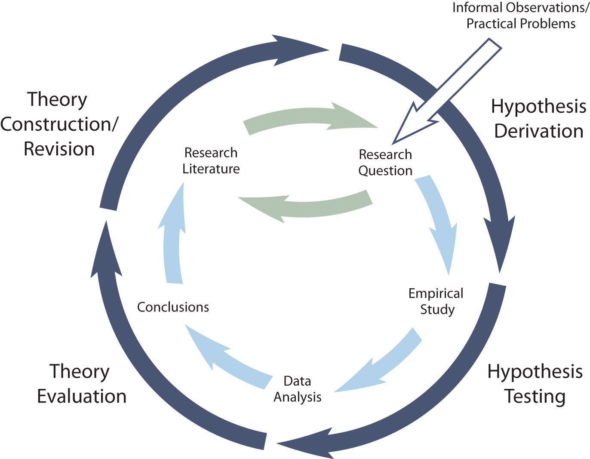

We have now seen what theories are, what they are for, and the variety of forms that they take in psychological research. In this section we look more closely at how researchers actually use them. We begin with a general description of how researchers test and revise their theories, and we end with some practical advice for beginning researchers who want to incorporate theory into their research.
The primary way that scientific researchers use theories is sometimes called the hypothetico-deductive methodThe general way that researchers use theories to generate new research and, in the process, test and revise the theories themselves. (although this term is much more likely to be used by philosophers of science than by scientists themselves). A researcher begins with a set of phenomena and either constructs a theory to explain or interpret them or chooses an existing theory to work with. He or she then makes a prediction about some new phenomenon that should be observed if the theory is correct. Again, this prediction is called a hypothesis. The researcher then conducts an empirical study to test the hypothesis. Finally, he or she reevaluates the theory in light of the new results and revises it if necessary. This process is usually conceptualized as a cycle because the researcher can then derive a new hypothesis from the revised theory, conduct a new empirical study to test the hypothesis, and so on. As Figure 4.5 "Hypothetico-Deductive Method Combined With the General Model of Scientific Research in Psychology" shows, this approach meshes nicely with the model of scientific research in psychology presented earlier in the book—creating a more detailed model of “theoretically motivated” or “theory-driven” research.
Figure 4.5 Hypothetico-Deductive Method Combined With the General Model of Scientific Research in Psychology
Together they form a model of theoretically motivated research.
As an example, let us return to Zajonc’s research on social facilitation and inhibition. He started with a somewhat contradictory pattern of results from the research literature. He then constructed his drive theory, according to which being watched by others while performing a task causes physiological arousal, which increases an organism’s tendency to make the dominant response. This leads to social facilitation for well-learned tasks and social inhibition for poorly learned tasks. He now had a theory that organized previous results in a meaningful way—but he still needed to test it. He hypothesized that if his theory was correct, he should observe that the presence of others improves performance in a simple laboratory task but inhibits performance in a difficult version of the very same laboratory task. To test this hypothesis, one of the studies he conducted used cockroaches as subjects (Zajonc, Heingartner, & Herman, 1969).Zajonc, R. B., Heingartner, A., & Herman, E. M. (1969). Social enhancement and impairment of performance in the cockroach. Journal of Personality and Social Psychology, 13, 83–92. The cockroaches ran either down a straight runway (an easy task for a cockroach) or through a cross-shaped maze (a difficult task for a cockroach) to escape into a dark chamber when a light was shined on them. They did this either while alone or in the presence of other cockroaches in clear plastic “audience boxes.” Zajonc found that cockroaches in the straight runway reached their goal more quickly in the presence of other cockroaches, but cockroaches in the cross-shaped maze reached their goal more slowly when they were in the presence of other cockroaches. Thus he confirmed his hypothesis and provided support for his drive theory.
Along with generating research questions, constructing theories is one of the more creative parts of scientific research. But as with all creative activities, success requires preparation and hard work more than anything else. To construct a good theory, a researcher must know in detail about the phenomena of interest and about any existing theories based on a thorough review of the literature. The new theory must provide a coherent explanation or interpretation of the phenomena of interest and have some advantage over existing theories. It could be more formal and therefore more precise, broader in scope, more parsimonious, or it could take a new perspective or theoretical approach. If there is no existing theory, then almost any theory can be a step in the right direction.
As we have seen, formality, scope, and theoretical approach are determined in part by the nature of the phenomena to be interpreted. But the researcher’s interests and abilities play a role too. For example, constructing a theory that specifies the neural structures and processes underlying a set of phenomena requires specialized knowledge and experience in neuroscience (which most professional researchers would acquire in college and then graduate school). But again, many theories in psychology are relatively informal, narrow in scope, and expressed in terms that even a beginning researcher can understand and even use to construct his or her own new theory.
It is probably more common, however, for a researcher to start with a theory that was originally constructed by someone else—giving due credit to the originator of the theory. This is another example of how researchers work collectively to advance scientific knowledge. Once they have identified an existing theory, they might derive a hypothesis from the theory and test it or modify the theory to account for some new phenomenon and then test the modified theory.
Again, a hypothesis is a prediction about a new phenomenon that should be observed if a particular theory is accurate. Theories and hypotheses always have this if-then relationship. “If drive theory is correct, then cockroaches should run through a straight runway faster, and a branching runway more slowly, when other cockroaches are present.” Although hypotheses are usually expressed as statements, they can always be rephrased as questions. “Do cockroaches run through a straight runway faster when other cockroaches are present?” Thus deriving hypotheses from theories is an excellent way of generating interesting research questions.
But how do researchers derive hypotheses from theories? One way is to generate a research question using the techniques discussed in Chapter 2 "Getting Started in Research" and then ask whether any theory implies an answer to that question. For example, you might wonder whether expressive writing about positive experiences improves health as much as expressive writing about traumatic experiences. Although this is an interesting question on its own, you might then ask whether the habituation theory—the idea that expressive writing causes people to habituate to negative thoughts and feelings—implies an answer. In this case, it seems clear that if the habituation theory is correct, then expressive writing about positive experiences should not be effective because it would not cause people to habituate to negative thoughts and feelings. A second way to derive hypotheses from theories is to focus on some component of the theory that has not yet been directly observed. For example, a researcher could focus on the process of habituation—perhaps hypothesizing that people should show fewer signs of emotional distress with each new writing session.
Among the very best hypotheses are those that distinguish between competing theories. For example, Norbert Schwarz and his colleagues considered two theories of how people make judgments about themselves, such as how assertive they are (Schwarz et al., 1991).Schwarz, N., Bless, H., Strack, F., Klumpp, G., Rittenauer-Schatka, H., & Simons, A. (1991). Ease of retrieval as information: Another look at the availability heuristic. Journal of Personality and Social Psychology, 61, 195–202. Both theories held that such judgments are based on relevant examples that people bring to mind. However, one theory was that people base their judgments on the number of examples they bring to mind and the other was that people base their judgments on how easily they bring those examples to mind. To test these theories, the researchers asked people to recall either six times when they were assertive (which is easy for most people) or 12 times (which is difficult for most people). Then they asked them to judge their own assertiveness. Note that the number-of-examples theory implies that people who recalled 12 examples should judge themselves to be more assertive because they recalled more examples, but the ease-of-examples theory implies that participants who recalled six examples should judge themselves as more assertive because recalling the examples was easier. Thus the two theories made opposite predictions so that only one of the predictions could be confirmed. The surprising result was that participants who recalled fewer examples judged themselves to be more assertive—providing particularly convincing evidence in favor of the ease-of-retrieval theory over the number-of-examples theory.
If a hypothesis is confirmed in a systematic empirical study, then the theory has been strengthened. Not only did the theory make an accurate prediction, but there is now a new phenomenon that the theory accounts for. If a hypothesis is disconfirmed in a systematic empirical study, then the theory has been weakened. It made an inaccurate prediction, and there is now a new phenomenon that it does not account for.
Although this seems straightforward, there are some complications. First, confirming a hypothesis can strengthen a theory but it can never prove a theory. In fact, scientists tend to avoid the word “prove” when talking and writing about theories. One reason for this is that there may be other plausible theories that imply the same hypothesis, which means that confirming the hypothesis strengthens all those theories equally. A second reason is that it is always possible that another test of the hypothesis or a test of a new hypothesis derived from the theory will be disconfirmed. This is a version of the famous philosophical “problem of induction.” One cannot definitively prove a general principle (e.g., “All swans are white.”) just by observing confirming cases (e.g., white swans)—no matter how many. It is always possible that a disconfirming case (e.g., a black swan) will eventually come along. For these reasons, scientists tend to think of theories—even highly successful ones—as subject to revision based on new and unexpected observations.
A second complication has to do with what it means when a hypothesis is disconfirmed. According to the strictest version of the hypothetico-deductive method, disconfirming a hypothesis disproves the theory it was derived from. In formal logic, the premises “if A then B” and “not B” necessarily lead to the conclusion “not A.” If A is the theory and B is the hypothesis (“if A then B”), then disconfirming the hypothesis (“not B”) must mean that the theory is incorrect (“not A”). In practice, however, scientists do not give up on their theories so easily. One reason is that one disconfirmed hypothesis could be a fluke or it could be the result of a faulty research design. Perhaps the researcher did not successfully manipulate the independent variable or measure the dependent variable. A disconfirmed hypothesis could also mean that some unstated but relatively minor assumption of the theory was not met. For example, if Zajonc had failed to find social facilitation in cockroaches, he could have concluded that drive theory is still correct but it applies only to animals with sufficiently complex nervous systems.
This does not mean that researchers are free to ignore disconfirmations of their theories. If they cannot improve their research designs or modify their theories to account for repeated disconfirmations, then they eventually abandon their theories and replace them with ones that are more successful.
It should be clear from this chapter that theories are not just “icing on the cake” of scientific research; they are a basic ingredient. If you can understand and use them, you will be much more successful at reading and understanding the research literature, generating interesting research questions, and writing and conversing about research. Of course, your ability to understand and use theories will improve with practice. But there are several things that you can do to incorporate theory into your research right from the start.
The first thing is to distinguish the phenomena you are interested in from any theories of those phenomena. Beware especially of the tendency to “fuse” a phenomenon to a commonsense theory of it. For example, it might be tempting to describe the negative effect of cell phone usage on driving ability by saying, “Cell phone usage distracts people from driving.” Or it might be tempting to describe the positive effect of expressive writing on health by saying, “Dealing with your emotions through writing makes you healthier.” In both of these examples, however, a vague commonsense explanation (distraction, “dealing with” emotions) has been fused to the phenomenon itself. The problem is that this gives the impression that the phenomenon has already been adequately explained and closes off further inquiry into precisely why or how it happens.
As another example, researcher Jerry Burger and his colleagues were interested in the phenomenon that people are more willing to comply with a simple request from someone with whom they are familiar (Burger, Soroka, Gonzago, Murphy, & Somervell, 1999).Burger, J. M., Soroka, S., Gonzago, K., Murphy, E., & Somervell, E. (1999). The effect of fleeting attraction on compliance to requests. Personality and Social Psychology Bulletin, 27, 1578–1586. A beginning researcher who is asked to explain why this is the case might be at a complete loss or say something like, “Well, because they are familiar with them.” But digging just a bit deeper, Burger and his colleagues realized that there are several possible explanations. Among them are that complying with people we know creates positive feelings, that we anticipate needing something from them in the future, and that we like them more and follow an automatic rule that says to help people we like.
The next thing to do is turn to the research literature to identify existing theories of the phenomena you are interested in. Remember that there will usually be more than one plausible theory. Existing theories may be complementary or competing, but it is essential to know what they are. If there are no existing theories, you should come up with two or three of your own—even if they are informal and limited in scope. Then get in the habit of describing the phenomena you are interested in, followed by the two or three best theories of it. Do this whether you are speaking or writing about your research. When asked what their research was about, for example, Burger and his colleagues could have said something like the following:
It’s about the fact that we’re more likely to comply with requests from people we know [the phenomenon]. This is interesting because it could be because it makes us feel good [Theory 1], because we think we might get something in return [Theory 2], or because we like them more and have an automatic tendency to comply with people we like [Theory 3].
At this point, you may be able to derive a hypothesis from one of the theories. At the very least, for each research question you generate, you should ask what each plausible theory implies about the answer to that question. If one of them implies a particular answer, then you may have an interesting hypothesis to test. Burger and colleagues, for example, asked what would happen if a request came from a stranger whom participants had sat next to only briefly, did not interact with, and had no expectation of interacting with in the future. They reasoned that if familiarity created liking, and liking increased people’s tendency to comply (Theory 3), then this situation should still result in increased rates of compliance (which it did). If the question is interesting but no theory implies an answer to it, this might suggest that a new theory needs to be constructed or that existing theories need to be modified in some way. These would make excellent points of discussion in the introduction or discussion of an American Psychological Association (APA) style research report or research presentation.
When you do write your research report or plan your presentation, be aware that there are two basic ways that researchers usually include theory. The first is to raise a research question, answer that question by conducting a new study, and then offer one or more theories (usually more) to explain or interpret the results. This format works well for applied research questions and for research questions that existing theories do not address. The second way is to describe one or more existing theories, derive a hypothesis from one of those theories, test the hypothesis in a new study, and finally reevaluate the theory. This format works well when there is an existing theory that addresses the research question—especially if the resulting hypothesis is surprising or conflicts with a hypothesis derived from a different theory.